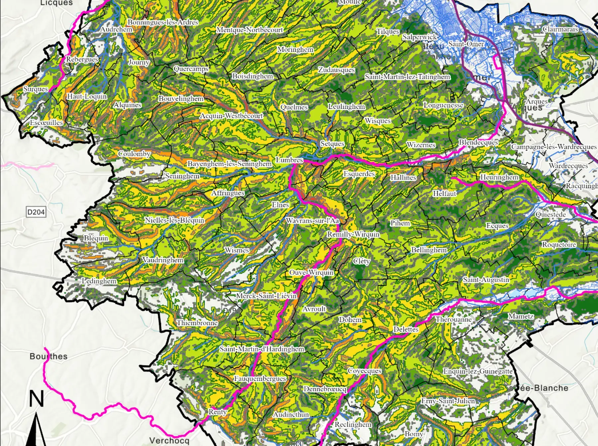

Analyse territoriale
Portraits de territoire, synthèses AFOM, lecture des dynamiques agricoles et démographiques, observation de terrain et photographie.
Mis en œuvre : , ,

Portfolio
Géographe-aménageur, développement de projets d'énergies renouvelables et transitions territoriales
Je lis un territoire par la carte et par le terrain, puis j'en tire des supports qui aident à décider. Prospection éolienne et partage de la valeur chez BayWa r.e. en Montagne d'Ardèche, diagnostic agricole et prospective 2050 pour l'agence d'urbanisme du Pays de Saint-Omer, gestion de l'eau en Gascogne et en vallée de la Garonne.
Carte en fond : pentes et état chimique des cours d'eau, Pays de Saint-Omer. Réalisation Robin Anselin, ArcGIS Pro, 2025. Sources : data.gouv, BRGM, DCE.
Étudiant en Master 2 Géographie, Aménagement, Environnement et Développement, parcours Transitions environnementales dans les territoires (TRENT), à l'Université Toulouse Jean Jaurès.
Je viens de l'urbanisme de terrain : un DUT Gestion urbaine et un stage au service urbanisme d'une commune de la métropole lilloise, puis une licence d'aménagement entre Versailles Saint-Quentin et Lille. Le master m'a orienté vers les transitions rurales et environnementales : agriculture, eau, paysages, puis le développement éolien, sujet de mon stage et de mon mémoire de M2 chez BayWa r.e.
Mes travaux combinent toujours trois registres : des données traitées et cartographiées, des entretiens ou observations auprès des acteurs, et une restitution lisible par des élus ou des techniciens.
Sept travaux choisis parmi mes stages et ateliers de 2023 à 2026. Chaque fiche précise le cadre, mon rôle réel et ce qui a été produit. Les travaux collectifs sont signalés comme tels.
Uniquement ce que les livrables présentés permettent de vérifier.
Portraits de territoire, synthèses AFOM, lecture des dynamiques agricoles et démographiques, observation de terrain et photographie.
Mis en œuvre : , ,
Jointures et filtres spatiaux, croisements multicritères (pentes, qualité de l'eau, cultures, captages), zones tampons, comparaison diachronique, mise en page avec légende, échelle et sources.
Mis en œuvre : , ,
Code de l'environnement et de l'urbanisme (distance de 500 m, RNU), loi APER, SRADDET, SCoT, charte de PNR, avis MRAe, IFER, DOCOB Natura 2000, SAGE, PAC.
Mis en œuvre : , , ,
Mémoire de recherche appliquée, notes de cadrage, posters de synthèse, supports de soutenance, fiches acteurs, guides d'entretien.
Mis en œuvre : , ,
| Outil ou donnée | Usage vérifiable |
|---|---|
| ArcGIS Pro | Atlas du diagnostic agricole du Pays de Saint-Omer (2025) |
| QGIS | Prospection éolienne chez BayWa r.e. : contraintes, pentes, extraction du RPG, choix machine (2026) ; carte départementale de l'Ariège (QGIS 3.40, 2025) |
| ArcGIS (isochrones) | Accessibilité des aménités à 30 minutes, diagnostic Montréjeau – Port de Balès |
| Canva, Google Slides, Word | Posters, supports de soutenance, fiche acteur, rapports |
| Données agricoles | Recensement agricole 2010 et 2020, Agreste, RPG, OTEX |
| Données environnementales | BD TOPO, BD Carto, Corine Land Cover, DCE, BRGM, Géorisques, SIEAG, Climadiag |
Avril – octobre 2026
Agence de Montpellier, stage de M2
Prospection de sites sous QGIS, faisabilité réglementaire au regard de la charte du PNR des Monts d'Ardèche et des documents d'urbanisme, rencontres avec les élus et présentation du partage de la valeur, fiches techniques et validation interne des secteurs. Mémoire soutenu le 9 septembre 2026.
Avril – août 2025
Agence d'urbanisme et de développement du Pays de Saint-Omer, stage de M1
Diagnostic agricole croisant RPG, recensement agricole et INSEE, scénarios à l'horizon 2050, entretiens et restitution aux élus. Mémoire soutenu le 3 septembre 2025.
2024 – 2026
Parcours TRENT, Université Toulouse Jean Jaurès
Mémoire de M2 sur le partage territorial de la valeur et l'appropriation locale des projets éoliens. Ateliers pour le SMIVAL (vallée de la Lèze) et l'Établissement public Garonne.
2022 – 2024
Université de Versailles Saint-Quentin-en-Yvelines, puis Université de Lille
L2 : diagnostic territorial de Trappes et de Saint-Quentin-en-Yvelines. L3 : cartographie de la perméabilité des sols du centre de Lille.
Février – mai 2022
Métropole européenne de Lille
Instruction des autorisations du droit des sols, suivi du projet de renouvellement urbain du Blanc-Riez avec la MEL, cartes d'aide à la décision.
2020 – 2022
IUT de Tourcoing, Université de Lille
Anglais B2, espagnol A1. Permis B. BAFA, animation depuis 2018. MOOC énergies renouvelables.
Disponible à partir de novembre 2026 pour un stage ou un poste en développement de projets d'énergies renouvelables, en études SIG et environnement ou en planification territoriale. Toulouse et Occitanie, métropole lilloise, Paris et petite couronne.